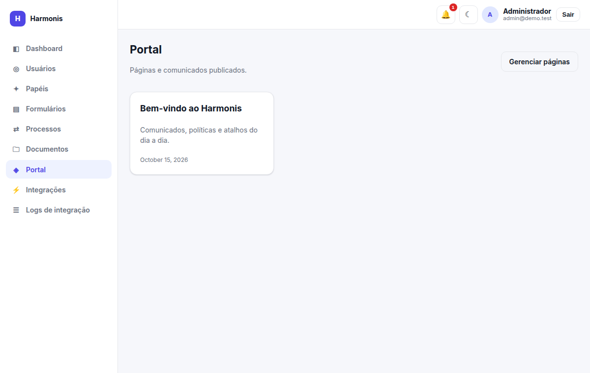
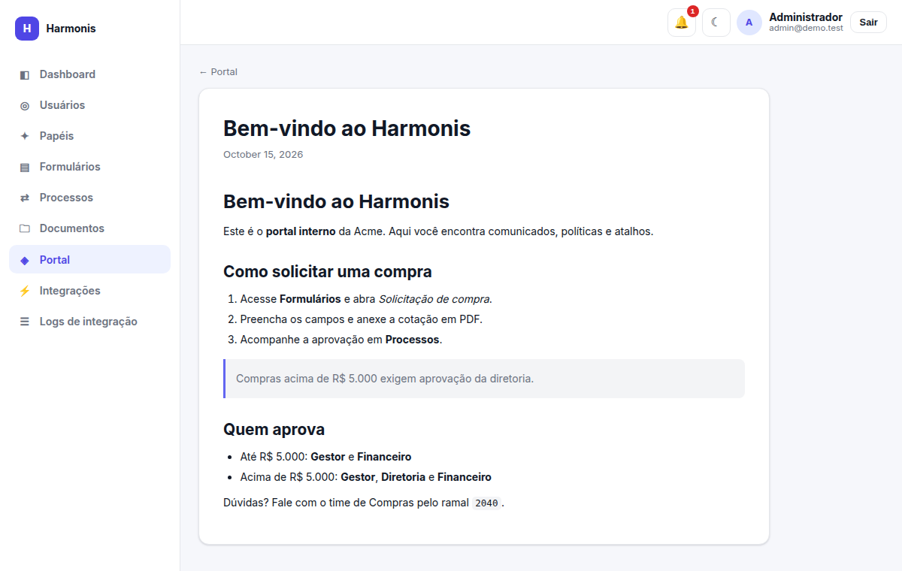
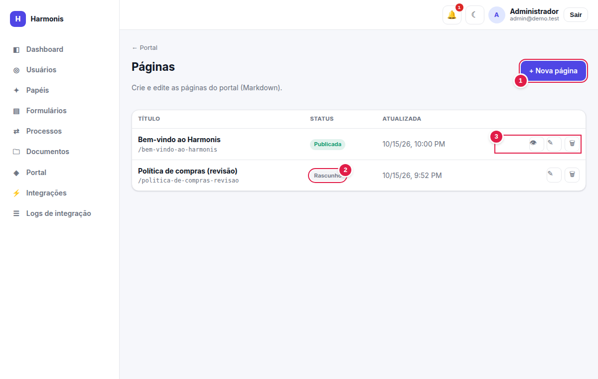
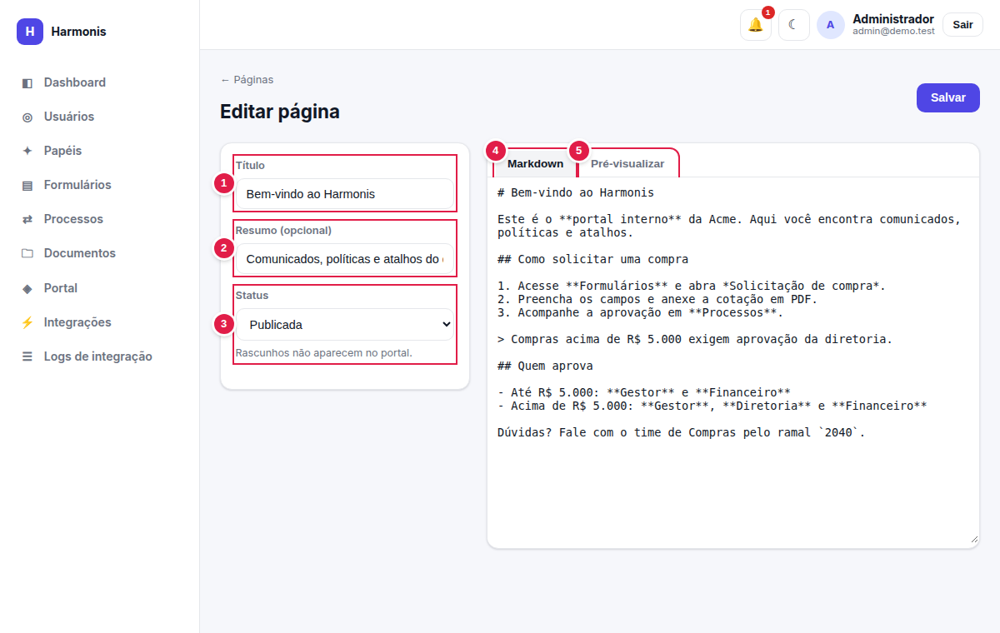
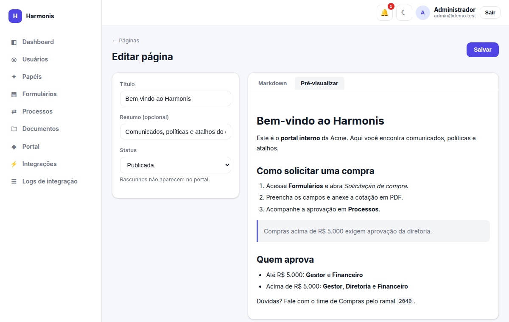

Conteúdo
Portal e páginas
O espaço de comunicados da empresa: páginas escritas em Markdown, com rascunho, pré-visualização e publicação.
Permissões necessárias
Ler o portal: pages.view · listar/editar páginas: pages.update · criar: pages.create ·
excluir: pages.delete.
Lendo o portal

Clique em um cartão para ler a página. Quem tem pages.update também vê o botão Gerenciar páginas.

Gerenciando páginas

- + Nova página — abre o editor em branco (
pages.create). - Status — Publicada aparece no portal; Rascunho só aparece aqui.
- Ações — 👁 ver no portal (só publicadas), ✎ editar, 🗑 excluir (
pages.delete, pede confirmação).
A lista mostra o título, o endereço (/slug), o status e a data da última atualização. Ela inclui rascunhos, ao contrário do portal.
O editor de páginas

- Título — obrigatório (o botão Salvar fica desabilitado sem ele). Dele é derivado o endereço único da página.
- Resumo (opcional) — frase curta exibida no cartão do portal.
- Status — Rascunho ou Publicada. Rascunhos não aparecem no portal. A data de publicação é registrada na primeira publicação.
- Aba Markdown — onde você escreve.
- Aba Pré-visualizar — mostra o resultado já com a mesma sanitização usada no portal.

Guia rápido de Markdown
# Título grande
## Subtítulo
### Seção menor
Texto com **negrito**, *itálico* e `código`.
- item de lista
- outro item
1. passo um
2. passo dois
> Citação / destaque
[texto do link](https://exemplo.com)
| Escreva | Resultado |
|---|---|
# a ###### | Títulos de nível 1 a 6. |
**x** / *x* | Negrito / itálico. |
- ou 1. | Lista com marcadores / numerada. |
> | Citação em destaque. |
[t](url) | Link. |
`x` e blocos ``` | Código. |
Segurança e limites
- O HTML gerado é sanitizado: scripts, atributos de evento (
onclick…), linksjavascript:e quadros (iframe) são removidos. - Tabelas Markdown não são suportadas: o texto aparece com os traços e barras. Use listas.
- Imagens e arquivos devem ser hospedados em outro lugar; o portal não possui upload de imagens (para arquivos, use Documentos).
Boas práticas
Escreva um resumo claro (é o que aparece no cartão), use títulos para estruturar a página e publique somente depois de conferir a pré-visualização.